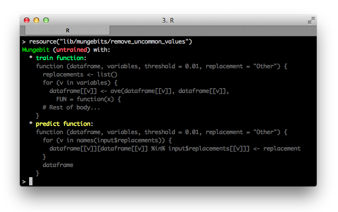
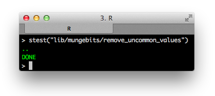
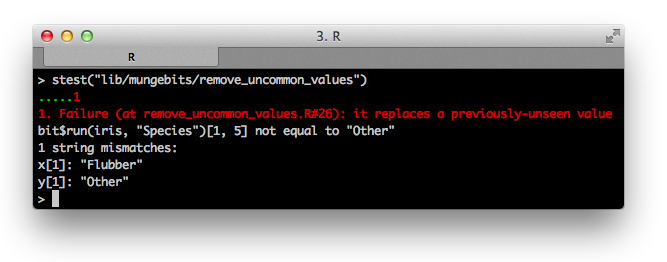
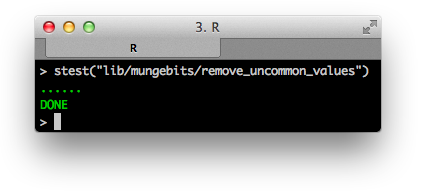

Machine learning looks at first glance like the science of devising and answering pure statistical questions on real-life data sets. In practice, a lot of it ends up being data janitor work.
Turning the data cleaning and feature engineering process into a quick workflow and as pleasant a task as trying out different modeling methodologies will eventually address this problem.
Let's restrict the discussion to transforming one messy, raw dataset into a clean, ready-to-model dataset. Parsing and merging of data is not typically R's forte so we will solve the single dataset problem before proceeding with more complicated cleaning topologies.
The initial abstraction offered by the Syberia modeling engine is that of mungebits: atomic production-ready feature engineering templates that can be used to quickly clean a dataset without having to write separate code when it comes time to replicate the cleaning process on single rows of data.
Why would we want to replicate the entire process? That's precisely one of the difficulties that emerges when it comes time to "productionize" the model! The trained classifier expects a certain type of covariate matrix, namely the one in exactly the preprocessed format you generated by cleaning the data set.
But why would we want to think about "productionizing" right away when we are experimenting? Because lack of due consideration there is the primary obstacle leading to weeks or months long error-prone translation processes when turning an experimental result into one that can be applied on new data in the real world.
It's worth investing a little bit more time now instead of far more time later when we have to replicate the cleaning work on new data. Note this does not just apply to streaming systems! If someone gave you a new validation set from their data warehouse and asked to verify the performance on some new data points it would be equivalent to solving the streaming problem: we would have to replicate the entire cleaning process on the raw validation set.
For example, if you replaced messed up values with the correct values, imputed missing values, dropped certain columns, or derived some new features from the existing data, you will have to re-do that work when a single data point comes in--otherwise the trained classifier will be confused.
Operations that take one data.frame
and return another data.frame come
in two types: narrow and wide transformations. You can
delegate the narrow transformations to an ETL engineer or other
data curation role. However, this might not be feasible if we are deploying
a model, because they will have to provide a way to replicate their
process in real-time as well, for example through an API.
Narrow transformations, operations that can be done row-by-row without looking at the other rows, almost by definition do not need to store metadata to be reproduced on a single row. However, many of the most useful cleaning operations on a dataset—like sure independence screening, principal component analysis, imputation, discretization, aggregation and computation of ratios, numericalization of categorical features, and so on—are wide transformations.
The abundance of useful wide transformations is the reason why feature engineering cannot be separated from statistical modeling. It is impossible to have one person's role be maintaining a data pipeline while another person independently maintains a statistical model without running into a messy combinatorial explosion: they are inseparable aspects of the same task, in the same way database operations cannot be separated from a web application but instead compose its heart.
Let's convince ourselves that this is true.
Every time you write a script that begins with read.csv("data.csv")
and ends with a clean data set you have actually produced an
endomorphism on the space of dataframes, that is, a function
which takes one dataframe and yields another dataframe. Functions that
have the same domain and co-domain are really cool because they can
be trivially composed: if I have several such functions, I can just
apply them one after the other without worrying about setting up a complex
input/output graph since I know the input and the result will always be
a dataframe. (For the mathematically inclined, endomorphisms of any space form
a monoid under composition.)
In algebra class we were able to prove beautiful facts about parabolas and
the other conic sections because we looked at the most general cases, like
y = a * x^2 + b * x + c. Here, a,
b, and c are parameters:
for any combination of such three constants drawn from the real numbers we
get a different parabola.
Parametrization is powerful because it means we don't have to repeat our work every time a special case comes along. Finding the quadratic equation can be done once; the other times we simply plug in the parameters! Every time you write the type of code below you are re-deriving the quadratic formula by hand.
# Uncomment the line below if you want to run this on an example.
# raw_data <- data.frame(occupation = c("Doctor", rep("Waiter", 200)), stringsAsFactors = FALSE)
raw_data$occupation <- ave(raw_data$occupation, raw_data$occupation, FUN = function(x) {
if (length(x) / NROW(raw_data) < 0.01) { # Percentage of population with this occupation.
"Other"
} else {
x[1L]
}
})
If we later decide to perform the same operation on another variable, the path of lowest resistance will be copying the above and replacing "occupation" with the other variable name. If instead we had parametrized this as a function that took a dataset, the variables to alter, and a minimal threshold for replacing the value with "Other," we could easily re-use it for a variety of datasets.
What about when it comes time to replay the operation on a single row of data or a new validation set? The above code won't run! With a single row of data, all values will always have trivially 100% incidence and nothing will ever be replaced with "Other," which might lead to unexpected results when it comes to our classifier. Now imagine this problem amplified by 100 more feature engineering steps on a dataset with 1000s of variables. This is why data cleaning is seen as a combinatorial nightmare.
But it does not have to be. Mungebits solve this problem, and a proper generalization of mungebits solves any problem of taking raw, messy data sets, joining and munging them until there's a clean covariate matrix on which we can train a model—without having to ever write a custom data pipeline, instead making the process part of the explorative data science journey.
So what does a mungebit for the above step look like?
# lib/mungebits/remove_uncommon_values.R
train <- function(dataframe, variables, threshold = 0.01, replacement = "Other") {
replacements <- list()
for (v in variables) {
dataframe[[v]] <- ave(dataframe[[v]], dataframe[[v]], FUN = function(x) {
if (length(x) / NROW(dataframe) < threshold) {
replacements[[v]] <<- c(replacements[[v]], x[1L])
"Other"
} else {
x[1L]
}
})
}
input$replacements <- replacements
dataframe
}
predict <- function(dataframe, variables, threshold = 0.01, replacement = "Other") {
variables <- intersect(colnames(dataframe), variables)
for (v in names(input$replacements)) {
dataframe[[v]][dataframe[[v]] %in% input$replacements[[v]]] <- replacement
}
dataframe
}
So we had to do a little more work. The advantage is that we will never
have to think about the problem of replacing columns with rare values again:
we will be able to pass different parameters to the mungebit, and when it is
trained we will be able to re-use it on arbitrary future data sets, including
single rows for new data points. We can grab our mungebit within the
Syberia session using resource("lib/mungebits/remove_uncommon_values").

Let's see what happens when we run it on a simple example.
bit <- resource("lib/mungebits/remove_uncommon_values")
iris$Species <- as.character(iris$Species)
iris[1, "Species"] <- "Bumblebee"
head(bit$run(iris, "Species"))
# Sepal.Length Sepal.Width Petal.Length Petal.Width Species
# 1 5.1 3.5 1.4 0.2 Other
# 2 4.9 3 1.4 0.2 setosa
What happens when we run it on a single row of iris data?
bit$run(iris[1, ], "Species") # We never modified iris.
# Sepal.Length Sepal.Width Petal.Length Petal.Width Species
# 1 5.1 3.5 1.4 0.2 Other
Our feature engineering step is now "production ready"! We can replay it on streaming rows of new data or on new validation sets to determine whether our classifier is behaving as expected.
bit$train(iris[1, ])
# Error:
# This mungebit has already been trained, cannot re-train.
Training a mungebit is like flipping a one-time switch: once we do it, we can't undo it; we would need a new fresh mungebit. This way, we can be sure that once we have fed in our initial training set, its specific characteristics will be used to replay the feature engineering example as it happened.
For example, if a rare
value was on the border of the 0.01 threshold, certain subsamples
of the training set might consider it "rare" and replaceable with
"Other" whilst others do not. If we didn't have mungebits, we would
need to write a separate data pipeline for each model as to be
very careful about these sorts of edge cases. Incorrectly failing
to replace a value could lead to bizarre bugs in our classifier
when the column gets converted to a categorical feature. Instead, the unified
bit$run(...) interface means the only
time we will ever have to think about the train versus predict
distinction is when we are writing our mungebit.
Let's write some tests to convince ourselves our implementation is valid.
test_that("it does not replace a common value", {
bit <- resource()
iris$Species <- as.character(iris$Species)
# Test the mungebit when it is training.
expect_equal(as.character(bit$run(iris, "Species")[1, 5]), "setosa")
stopifnot(bit$trained())
# And when it is predicting.
expect_equal(as.character(bit$run(iris, "Species")[1, 5]), "setosa")
})

Looking pretty good! Note we used stest, a helper
provided by the Syberia modeling engine, to test our "resource", in this case the mungebit.
The point of good tests is to anticipate not only the example for which you wrote the code, but every possible input anyone could ever throw at it, so there are no surprises if someone uses your code in a way you did not expect.
test_that("it replaces an uncommon value", {
bit <- resource()
iris$Species <- as.character(iris$Species)
iris[1, 5] <- "Bumblebee"
expect_equal(bit$run(iris, "Species")[1, 5], "Other")
expect_equal(bit$run(iris, "Species")[1, 5], "Other")
})
test_that("it replaces a previously-unseen value", {
bit <- resource()
iris$Species <- as.character(iris$Species)
iris[1, 5] <- "Bumblebee"
expect_equal(bit$run(iris, "Species")[1, 5], "Other")
iris[1, 5] <- "Flubber"
expect_equal(bit$run(iris, "Species")[1, 5], "Other")
})

Oh no! Our first test failure. Writing tests is about stepping outside of the box of how you think about the work you have written and considering every possible scenario for how other people may use it. In this case, if we had encountered a new data point with a value that was not observed during the training process, we would have failed to replace it with "Other" — even though its incidence in the original data was 0%!
This is a very common oversight. While writing the original code, we assumed that we wish to replace values that are uncommon. We stored them for later so that we could repeat the same process when new data came in. However, we failed to take into account that future data could have an infinite number of possible values. We should have instead stored the very finite list (by the pigeonhole principle, at most 100) of common values: those with incidence more than 1%.
# lib/mungebits/remove_uncommon_values.R
train <- function(dataframe, variables, threshold = 0.01, replacement = "Other") {
common_values <- list()
for (v in variables) {
dataframe[[v]] <- ave(dataframe[[v]], dataframe[[v]], FUN = function(x) {
if (length(x) / NROW(dataframe) < threshold) {
"Other"
} else {
common_values[[v]] <<- c(common_values[[v]], x[1L])
x[1L]
}
})
}
input$common_values <- common_values
dataframe
}
predict <- function(dataframe, variables, threshold = 0.01, replacement = "Other") {
variables <- intersect(colnames(dataframe), variables)
for (v in names(input$common_values)) {
dataframe[[v]][!is.element(dataframe[[v]], input$common_values[[v]])] <- replacement
}
dataframe
}

The more tests we write, the more coverage we have. You can think of test coverage (how much of your code is covered by test cases) as insurance on future changes to the code base. As the amount of code we write increases and the project becomes more complex, it will be harder and harder to track what everyone's assumptions are about the inputs and outputs to all the functions and resources used throughout the project. If someone ever fixes a bug or refactors something, having lots of tests means it will be very easy to tell if they broke something in the process.